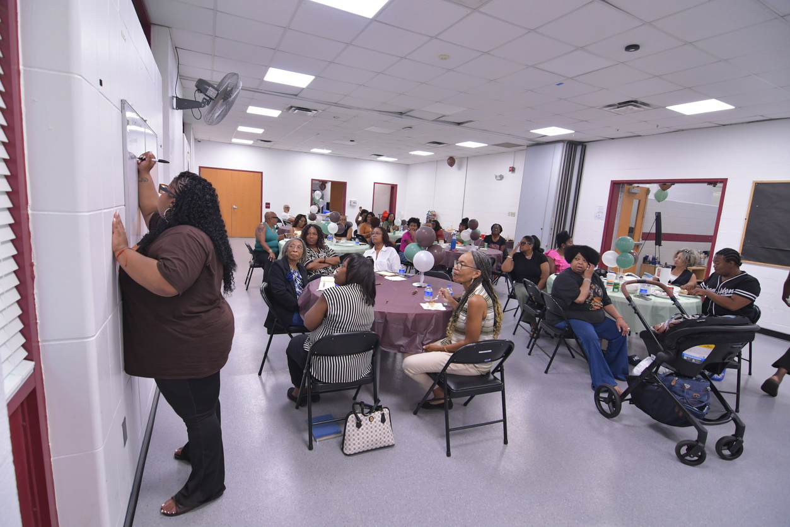

← All programs
← All programsHair Memory Lane
Participants reflected on hair memories and the cultural meaning of hair care, placing family, identity and lived experience at the center.
A community conversation about toxic chemicals in hair products. August 29, 2026 • Bowie, Maryland.
A community conversation about toxic chemicals in hair products. Through hair memories, a label lab and live priority-setting, participants helped shape our next chapter.
Not a lecture. A cultural wellness experience.

Spill the Tea was BHEP’s first community conversation and proof of concept. It created a space to celebrate Black hair culture, explore product ingredients and health, connect hair care to environmental justice and invite community members to shape the project’s direction. Rather than begin with a lecture about chemicals, we began with lived experience.
Participants reflected on hair memories and the cultural meaning of hair care, placing family, identity and lived experience at the center.
The conversation explored the factors that influence product decisions, including access, affordability, information and cultural practices.
Participants engaged with product labels and ingredient information, making the challenges of understanding chemical disclosures tangible.
The experience connected product exposures to the places where people live and work, using environmental justice mapping to broaden the conversation beyond individual products.
A policy conversation connected community questions about product safety to Maryland’s legislative landscape.
Participants identified what they wanted BHEP to address next, turning the event into a community-informed roadmap.
Responses from our first community conversation, as reported in our project pitch deck.
Clearer labels, ingredient disclosure beyond free-from claims, and access to experts who can answer questions.
Include men, boys and youth, respect Black hair traditions and avoid stigmatizing cultural practices.
Study actual product use and cumulative exposures rather than treating hair products in isolation.
Address affordability, occupational protections for stylists, enforcement and responsibility for product safety.
Create public forums and sustained opportunities for communities to influence research, education and policy.
The priorities from Spill the Tea inform BHEP’s developing work, including the Black Hair Chemical Atlas, culturally grounded education, community conversations and advocacy. These initiatives are being developed; the event was a starting point, not a claim that these outcomes have already been achieved.
Explore our projects